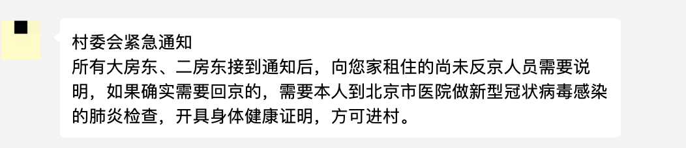
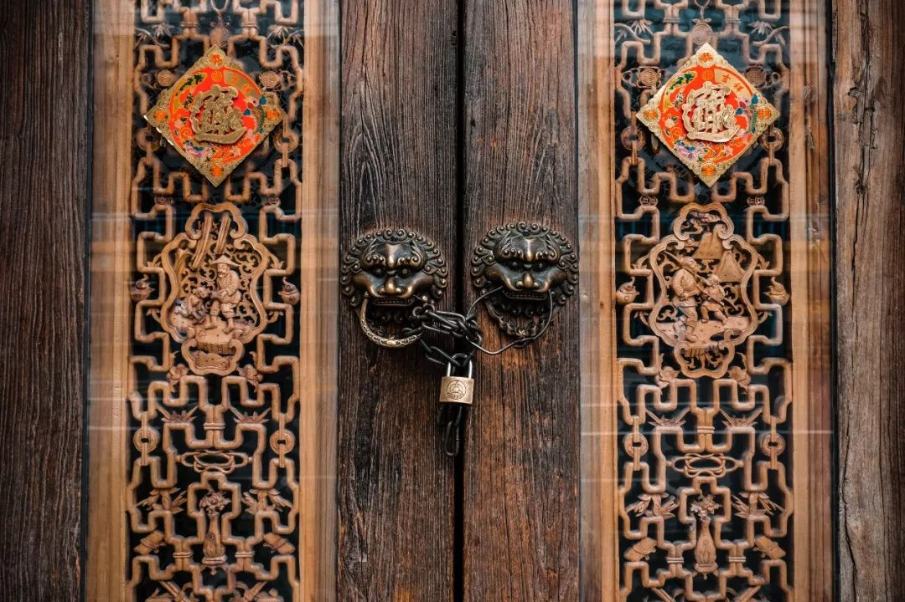

疫情中的心理援助：寻找局部的安全
原文链接 备份链接 GQ报道：一周前，有一条护士情绪崩溃的视频在微信上传播很广。在一个办公室里，有名女护士嚎啕大哭，情绪崩溃，有一名女同事去拍背安抚她，其他人继续沉默地吃饭。 这个视频给了很多人巨大的冲击，大家非常担心一线医护人员的心理状 …

《战疫口述记》，是燃财经在新型冠状病毒肺炎期间推出的特别栏目，记录疫情亲历者的观察和感受。本文为第4篇，查看前3篇请点击《我的“流浪”春节》《农村这样防肺炎》《我在武汉战肺炎》。
作者 | 黎明 闫丽娇 孔明明 金玙璠
孟亚娜 唐亚华 苏琦 赵磊
编辑 | 凌远川
今天是正月初七，本来应该是春节后全国人民开工的日子，但因为新型肺炎，大部分人的假期被延长至初十（或更晚）。不过，还是有那么一些人，或出于对工作的热爱，或担心回不了北京，或想赶在老家封城之前“出逃”，他们匆匆买好了回北京的车票，想要提前回到工作城市。
然而，这些提前返京或正打算返京的人，突然惊讶地发现，回去并没有那么容易。
北京市政府官网1月30日发布《北京市新型冠状病毒感染的肺炎疫情社区(村)防控工作方案(试行)》，要求实施群防群治、联防联控，网格化、地毯式管理，对返(来)京人员进行分类管控，督促其他疫情高发地区来(返)京人员主动自行隔离14天。
确诊数量还在提升。截至1月30日24时，全国31省（区、市）和新疆生产建设兵团累计报告确诊新型肺炎病例9692例（四川省累计确诊病例核减1例），疑似病例15238例，累计治愈171人，累计死亡213人。
在疫情扩散、防控升级的背景下，对于北京这样的超大型城市而言，迎接返京大潮是一个艰巨任务。
有人在外地收到了北京房东发来的短信，被通知所有外地返京人员及车辆都不能进村；有人在外地得知自己在北京的小区已被封锁，不得已退掉了返京的车票；有人回京了被拦在小区门外；还有人在老家被父母阻止回京，说大不了就辞职在家考事业单位。
在这样的特殊时期，从城市返乡后，如今是否返京、什么时候返京、如何返京，成为了一个问题。
***回北京住所前要先去市医院开具健康证明***
***担心被交叉感染但也愿意接受***
吕强 27岁 市场BD
我本来订的是2月1号的返程高铁票，但昨天（1月30日）早上7点的时候，收到了房东发给我的村委会发布的紧急通知，说从1月29日20:00起，所有外地返京人员及车辆都不能进村，必须在外面隔离14天、并出示在京14天身体健康证明，才能进村。
 北京白庙村村委会发布的紧急通知
北京白庙村村委会发布的紧急通知
来源 / 受访者
收到通知后，我赶紧给房东打了一个电话，询问具体情况，房东当时回复我说，他会去村委会开会，商量是否能让我们到北京当地医院开具身体健康证明。我在公司群里跟领导反应了一下情况，他们临时开会决定，可能会给我们这些返程比较困难的员工提供宿舍等便利，因为现在北京的很多宾馆和旅店也不让外来人员入住。下午两点钟，我们收到了村委会的通知：如果确实需要回京，需要本人到北京市医院做新型冠状病毒感染的肺炎检查，开具身体健康证明，方可进村。
村委会紧急开会之后的最新通知
来源 / 受访者
我老家是哈尔滨市下面的一个村子，我是1月23号回的老家。从北京回家的时候我买了很多口罩和消毒液，在家也会时不时地监测下体温。我们村子比较小，总共100多人，基本都是从北京、山东等省市回来的，目前问题不大。
现在我就希望能够返京回到我住的地方，我可以自我隔离、不与外界接触、线上办公。公司虽然已经通知开工延迟，但到2月3日马上也要开始工作，我不想影响自己的工作。我也有想过推迟回京，但如果大家都推迟的话，公司可能就会比较艰难，一些客户可能也要放弃，影响比较大，最好还是能正常工作。我是做市场BD的，现在这种情况会更多用网销和电销的方式进行工作。
根据村委会的通知，虽然担心去医院会有被交叉感染的风险，但我觉得能开健康证明也可以，这样对白庙村现在居住的人来说，也更安全一些，是对双方都负责的一个表现。
***返京人员禁止入内***
***未离京也要办临时出入证***
宋辞 24岁 互联网公司销售
我在北京工作两年了，租住在北京市昌平区北七家镇平西府村里的小区，原本计划1月31号返京，票已经买好了。
30号房东在微信群里通知房客：返京人员一律不让进村，需要到北京清华长庚医院开健康证明，在指定地点隔离14天。也就是说，现在外地人员回京也不让回家，没有地方住，甚至可能在医院隔离。我犹豫再三，把票退了。
我认为，现在村子里对外地人的这些要求，就一个目的：禁止返京。其实，平西府村不只针对外地返京人员，对未离京人员一样严格管控。“返京潮”马上开始了，30号村里紧急发了通知，外地返京人员禁止入村，未离京人员要办理临时出入证。据说，现在但凡出村，都会被问询缘由，举个例子，如果是出去买菜，会限定回村时间，晚回来还不行。
 平西府村发布的通知 来源 / 受访者
平西府村发布的通知 来源 / 受访者
我是1月20号回老家黑龙江哈尔滨的，路上一切都没问题，现在老家这边也封道了，正常客运不通车，想出来只能坐黑车，原来车费50元现在黑车涨到了200元，整整翻了4倍，即便是这个价格，很多黑车也不愿意拉。
房东说这两天村里的“政策”一时一变，唯一能确定的就是，不让外地返京人员回去，其他具体情况，房东也无法确定。
其实，如果出具健康证明就让回家，我就回京了，但是现在的情况是，要去指定医院做检查，开健康证明，到指定地点隔离。疫情当前可以理解，不理解也没办法，大家都没得选。
*****买不到车票提前返京*****
*****但被拦在小区门外*****
陈菲 24岁 游戏美术
我老家是山东的，我在北京租的房子位于房山区稻田回迁楼南区。29号下午返京，我在火车上收到一条陌生短信，说是小区已封闭，除了本村村民，一律禁止进入小区。晚上9点半到北京西站下火车，10点多到小区，果然小区封了，保安不让我进，因为我是返京回来的租户。
我发现小区门口的牌子上，写的是要进行登记和在家隔离，并没说不让进。但是大门保安坚决不让进，怎么说都不管用。大晚上的，我进去拿点换洗衣服都不行。

当时我感到很无助，跟保安争论了一番，我打电话报警了，但是警察说他们管不了，让我拨打政府热线12345。我打了12345，并让警察出警到现场，警察说互相谅解，有损失可以起诉。12345第二天给物业打了电话，说让我找业主，但业主说也没有办法，因为小区房子是当地6个村的回迁房，这是6个村的事情，所以将小区封锁是当地村委会的决定。
在警察来之前，保安跟我说有一男一女偷偷跑进去了，但是被他看到了。警察来了之后，保安带着警察，去楼里又把人给赶出来了，当时那俩人还拉着行李箱。
我是因为买不到返程的卧铺票，才选择提前返京，但没想到遇到这种情况。还好在第二天下午，物业跟我打电话说，除了湖北籍的，如果体温37度以下，可以联系房东签字进小区，但必须在家隔离14天，每天两次报告体温给物业。费了这么大周折，总算是进小区了。

***北京好多小区都实施了封闭措施***
***但每个小区的松严程度不同***
旖旎 27岁 互联网从业者
我住北京图景嘉园小区，是公司提供的公租房。初四，小区物业给我打电话，说外地返京人员要在定点医院开一个无发热证明，才能进小区。定点医院离小区比较近的，有上地医院、西苑医院等，具体怎么定义，我本来打算昨天早上问的，结果得到了不让进小区的消息。昨天，我给物业打电话问具体政策，他们表示，目前小区全封闭，外来返京人员一律不许进门。
物业的说法是，我们的公租房是村集体土地，属于村民自治。村民一致同意，不让外地返京人员进门，那就可以不让外地返京人员进门。我另一个同事也给物业打电话，得到的说法是小区遵照西北旺镇政府的通知，所以不让进门。最终他们也没有给一个明确的说法，不知道到底是因为什么不让进门，也不知道是谁做出的决策。

之后我也给西北旺镇政府打了电话，工作人员回复说，他们只是建议指导小区注意防控，具体措施是物业执行。目前政府已经接到多个反映图景嘉园小区问题的电话，具体如何解决，工作人员只是回应，他们会记录下来，向领导反映，并与小区协调。至于结果如何，怎么给大家反馈，工作人员也没直接说明白。
这个房因为是通过公司的公租房，我也和公司反映了。但是公司说，这是属地化管理，公司也没办法，让我暂时别回京。我现在人在山西，票已经退了。我觉得封村、居家隔离都可以理解，但是小区不让进门，就没法理解了。听说正月初五晚上九点多，有妈妈带着孩子回去也不让进去，报了警，最终也没有解决问题。北京有很多小区都在同一时间，开始实施封闭小区策略，但每个小区的松严程度也是不一样的。我们紧邻着的小区，只是规定了返京人员要自我隔离两周，起码还能回自己的家。

*****领导对我说“不是矫情的时候，*****
*****疫情再大也要照常上班”但归京进不了家门*****
李瑾 26岁 广告策划
这是我20几年经历过最魔幻的一个春节，等疫情结束，我要写一部小说把今年发生的事情记录下来。
我原本买了初四的票，晚上十一点半到北京的高铁。买票的时候，就知道疫情比较严重了，但公司群里一直没动静，身边有朋友已经通知了延迟上班。我一直不敢退票，因为比较了解公司的风格。初三早上我问领导，领导只是说去争取延迟。一直等到初三晚上，我果断把票退了，心想大不了就辞职。初四中午公司通知，说初七要正常上班，在家办公，且初七早上要把工作规划发过去。领导在群里一一提醒了每个人。
初六白天，北京开始传出封闭小区的消息，与此同时，领导开始追着大家回北京，并且要求下周一每个人都必须到岗。我也担心疫情，但是领导在群里一直催，他告诉我们越早赶回北京越安全，还和我们说不是矫情和享受的时候。我问了所有我能想到的汽运和拼车，拼车群里20多个去北京的师傅最近都不去了，没办法，我买了初七回去的高铁票，正常点的没有了，买了一张早上7点多的。从我们县到高铁站，还有一个小时路程，拼车的人倒是去，一问280元一个人。就在我说服自己无论怎么样也要回去的时候，有邻居发了消息，说我们小区也封了。
因为身在北方，且我们县的疫情不怎么严重，所以我其实对疫情没有那么大的焦虑，当得知我回到北京也回不了家的那一刻，我开始能渐渐理解“武汉人”的心情。起初我还存着侥幸心理，心想进不了小区大不了晚上翻墙悄悄溜进去。但邻居说，有人这么干了以后，被居委会喊来警察带走了。我彻底放弃了挣扎，并意识到了问题的严重，从邻居发来的图片看到，小区规定，凡是返京人员，一律不准入内。小区封锁了除大门以外的所有小门，且大门口有一排人站岗。
公司群里还在不停催着大家回去，我问了几个在北京的亲戚，他们的小区也被封闭了，外地人进不去。我再次退掉了回京的高铁票，春节前前后后光退票手续费就花了三百多。现在还不知道什么时候能回去。

*河南老家封路*
*北京房东不让返京*
刘凯 29岁 某互联网知识产权公司员工
我现在在老家河南洛阳，我是1月21日回家的，当时开始关注到肺炎疫情，但刚开始感觉疫情是可控的。本来准备春节回家串串亲戚就回北京，结果在家躺到了现在。老家这边年前并没有什么动静，初二才开始各种宣传，还封掉了出去的路，目前只留了一条生命线，供急救车通行。
我住在北京市昌平区北七家镇，本来是打算昨天（初六）返京的，但上午突然收到房东通知说不让回去了。
 房东发布的通知 来源 / 受访者
房东发布的通知 来源 / 受访者
房东那边没有说什么时候可以回去，只是说不允许返京人员入住了。老家这边也是，本来找朋友帮我联系了个私家车，昨天晚上也临时告知不让上路了。我联系了一个在汽车站的亲戚，他说目前河南疫情严重，具体什么时候开通还得等待上级指示。河南有个别地区疫情确实非常严重，但其实我们这一例都没有。我现在是既出不了河南，又回不去北京上班了。
公司那边建议我们早点回京，然后自我隔离，如果没问题，就可以回去上班了。但我现在也不知道什么时候能回去，家里人也和我说安全第一，再等等吧。我希望可以的话，公司最好可以安排远程办公。

*****公司要求上班，房东不让回去*****
*****只能退了票再协调*****
文文 24岁 北京某公司员工
我家在河北省，在北京上班。老家这边村里已经封了，可以出但是不能进。公司规定初十上班，我按照之前买好的票打算昨天（初六）回北京，但是早上突然接到房东通知，说回去以后不能直接住，要先去北京别的地方隔离观察14天。
我住在北京北五环外的白庙村，属于村里的小区，也对外出租。这几天我们房东一天一个说法，前两天跟我们说可以回去，但是要待在家里不能出门，昨天又说不能去，然后又说要去医院开一个肺部检查，确定没有问题，拿着医院检查才能回村。
现在因为回了北京没地方待，只能先退票了。我跟公司汇报上去了，看看公司和房东这边各自有什么解决办法。我这边得再跟房东沟通一下，他们也是根据村政府的通知来做的，可能根据疫情的变化来定，下一步看他们怎么解决。再就是看看公司能不能协调一下住的地方，不然我这没法回去。
其实前几天我还是觉得这种行为挺过分的，但这两天觉得可以理解。新闻上好多说有人返程上班，大巴上一个人感染了肺炎，传染半个车的人，确实还是待在家更安全一点。
另外，回了北京以后其实生活也会挺不方便的，因为我住的那一片是村里，离地铁口还有点距离，如果公交等方式都不方便出行的话，日常来往交通可能也有点困难。饭店肯定也都没开，还要自己做饭。
而且现在疫情也是一天比一天严重，我也比较担心。父母倒是没有强制，但是建议我待在家里。下一步我只能是等着公司和房东的通知了，我自己是想早一点回去上班。

小区不接受外地返京人员
就怕抢不到回京的票
张明 27岁 市场营销
我本来准备1月30号回北京，却接到了中介打来的电话，说他也是上午刚接到政府的红头文件，从1月30号上午8点开始，所有外地返京人员不得进宏福苑小区。
宏福苑是挺大的一个小区，在昌平区，可能因为这两天属于返程高峰，想控制一下人数，小区就被封了。具体哪天解封还没说，我只能把票退了。中介本来也是准备30号回北京的，现在他自己也不能回去。

我老家是黑龙江哈尔滨的，因为现在黑龙江已经有一例死亡人数，大家都有点慌张。有的小区甚至不让人出去，封路的封路，收费站挨个量体温，村里子拉满条幅，连经过的车辆都要登记，所有的饭店、大型超市、商场、洗浴中心和娱乐场所全部关门。父母也很担心，不让我回北京。
这次火车票退了的话，再买也挺麻烦。等到国家统一规定了复工时间，大家都会一窝蜂的抢，还不能提前预定。哈尔滨到北京的票，本来就特别难抢，那天看新闻应该是属于难买城市的TOP10。
虽说现在有电脑在哪都可以办公，关键是，现在连我的客户也都没有上班，我们也就没法开工。大家都要推迟开工，都拖着，我们急也没有用，但心里也为今年整个的行情发愁，在家呆着反而更焦虑。
就算回北京了也是问题，我打开外卖一看，现在接单的店变少了，外送费最起码8元起，贵的要二三十块，而且现在有的小区根本不让外卖小哥进门，回去吃饭都成难题。我平时本来就不做饭，外卖没了很难想象自己要怎么活，最近还是在家先跟爸妈学做饭吧。

***父母阻止我回北京***
***说大不了就辞职在家考事业单位***
陈志 25岁 互联网公司运营
我在北京一家互联网公司上班，在放假前好不容易抢到了初六返京的火车票，打算初七准时上班，但没想到疫情这么严重，假期延长了三天，初五那天我正要改签，我妈却让我直接退票，不想让我回北京。
我父母本来是对这个病没什么概念的，但我回来之后反复和他们讲这个病的情况，慢慢他们自己也害怕了，朋友叫吃饭都拒绝了，也没有串门拜年。
他们在家没事干，每天开着央视13台新闻频道，不断听着疫情新闻，念叨哪里又增加了多少病例，还对微信群里的各种谣言深信不疑，越来越觉得疫情严重。这几天，我们县城封闭了进出道路，除货运车外一切车辆禁止出入，小道消息不断传来，我妈听说过了正月十五才会安全一些，坚决让我退票。
初五那天晚上吃饭的时候，他们两人一唱一和，说这场疫情不知道要持续到什么时候，劝我留在家里，以前他们总给我转发市里一些机关单位的招聘启事，让我考公务员或者参加事业单位招录，但都被我拒绝了，这次他们要我向公司请假到正月十五，如果公司不批准就让我辞职，等疫情过去再考虑工作的事情。

除了疫情本身，他们还列了其他理由，说我不会做饭，回北京后点外卖、食堂吃都不安全，我说可以囤一些干粮，他们坚决反对；另外，他们听说返京人员要去医院检查开健康证明，怕我感染，觉得现在回去不确定性太多，让我老老实实待在家里。
我现在还在等公司通知，很多互联网公司都推迟了复工时间或者在家办公，网上说北京有些小区不让外地返京人员进入，我还得观望小区会不会通知我别回去，另外还有口罩、食品等物资，我都没有储备，也不容易买到，这些都构成了一些风险，我是独生家庭，不想父母太担心，确实有些为难，只希望疫情能快点过去，不要给人们的生活造成太大的影响。
*题图及文中图片来源于Pexels。应受访者要求，吕强、宋辞、陈菲、旖旎、李瑾、刘凯、文文、张明、陈志为化名。

你返京遇到了哪些问题？
欢迎在评论区留下你的故事，我们会在点赞前三（超过20个）的评论里挑选一位网友，送出爱奇艺季卡一张。文章转载请点击公众号菜单“转载合作”。
一手资讯/硬核报告/每日红包/线下活动！就差你了！快加微信rancaijing01回复“读者”一键上车！


燃财经工作室
点个在看吧😘
微信扫一扫赞赏作者 赞赏
长按二维码向我转账
点个在看吧😘
受苹果公司新规定影响，微信 iOS 版的赞赏功能被关闭，可通过二维码转账支持公众号。
原文链接 备份链接 GQ报道：一周前，有一条护士情绪崩溃的视频在微信上传播很广。在一个办公室里，有名女护士嚎啕大哭，情绪崩溃，有一名女同事去拍背安抚她，其他人继续沉默地吃饭。 这个视频给了很多人巨大的冲击，大家非常担心一线医护人员的心理状 …
原文链接 备份链接 1月29日下午，北京市委办、市政府办联合发文，提出本市出现多起聚集性病例（一家人里有几人发病）、没有湖北接触史的本地病例、以及发现隐性感染者和低龄感染者，波及范围可能越来越广。这些迹象都意味着“北京疫情出现由输入期转入 …
原文链接 备份链接 2003年上海仅有8人感染SARS，而本次疫情短短10天已有101人确诊。17年前的经验，这回还有没有用？ 上海的疫情防控有三张网：道口和口岸；发热门诊跟预检分诊；社区。 医生、警察、居民三人小组对所有湖北返沪人 …
原文链接 备份链接 *************▲************* 四川省巴中市巴州区，一辆鄂A车牌（武汉）轿车的车窗上，贴着红岩社区加盖公章的证明，称车主无感冒发烧现象，且正在家自行隔离。 （杜茂林/图） 全文共*4201*字， …
原文链接 备份链接 全国第一个公开通报疑似病例的省份；全国最早启动一级响应的省份。 虽是“人口小省”，但因与湖北经贸往来密切，目前确诊人数名列全国第二，确诊比例远超广东河南。 在发现5例疑似病例的时候，省政府高层即以“硬仗大仗”严阵 …